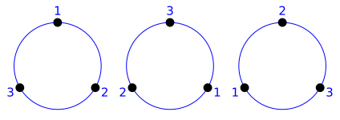
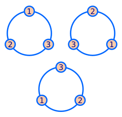
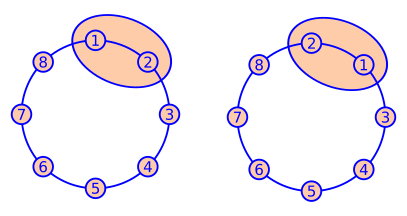

O número de permutações circulares de \(n\) elementos, é o número de maneiras de organizar \(n\) objetos distintos ao longo de um círculo fixo (isto é, não pode ser retirado do plano e virado). Notação:
\begin{equation*}
PC_n ~~\text{ ou }~~ PC(n).
\end{equation*}
Nota1.5.2.
Observe que os três círculos da (Figura 1.5.3) são equivalentes, ou seja, representam a mesma permutação circular, pois o segundo círculo pode ser obtido a partir do primeiro por uma rotação de \(-\frac{2\pi}{3}\) e o terceiro círculo pode ser obtido a partir do primeiro por uma rotação de \(-2\times\frac{2\pi}{3}\text{.}\)

Figura1.5.3.Três círculos que representam a mesma permutação circular.
Afirmação1.5.4.
O número total de permutações circulares com 3 elementos distintos é 2.
Observe que as permutações simples (1, 2, 3), (3, 1, 2) e (2, 3 ,1) podem ser identificadas com os círculos da (Figura 1.5.3), colocando o primeiro elemento na parte mais alta do círculo, o segundo elemento do lado direito e o terceiro elemento do lado esquerdo. Portanto essas três permutações simples, correspondem a apenas uma permutação circular.
Observe que as permutações simples (1, 3, 2), (2, 1, 3) e (3, 2 ,1) podem ser identificadas com os círculos da (Figura 1.5.5), da mesma forma que foi feito no caso anterior. Portanto essas três permutações simples, correspondem a apenas uma permutação circular.

Figura1.5.5.Três circulos que representam a mesma permutação circular. Como não temos mais casos, o número total de permutações circulares com três elementos é 2.
Teorema1.5.6.
O número de permutações circulares com \(n\) elementos distintos é
Calculamos o número de permutações circulares com 8 elementos, \(PC(8)\text{.}\) Agora, subtraímos desse total, o número de permutações de 8 elementos, na qual, dois deles estão juntos.

Figura1.5.10.Duas formas de organizar os elementos 1 e 2.
O que dá um total de \(PC(7)\times 2\) permutações circulares, pois temos duas formas de permutar os dois elementos que estão juntos, depois disso, olhamos para a roda de ciranda como se tivesse apenas 7 elementos. Portanto a resposta é
(Fundação CEFETMINAS - Prefeitura de Barbacena - Enfermeiro - 2016). Em uma empresa, as reuniões ocorrem em uma sala de mesa circular, segundo os seguintes critérios:
O presidente e o vice-presidente sempre se sentam um ao lado do outro.
Os três gerentes sempre se sentam um ao lado do outro.
Considerando-se uma reunião com 9 pessoas, o número de maneiras que elas poderão ocupar os assentos de tal forma que esses critérios sejam cumpridos é
\begin{equation*}
a) 720. \quad b) 1440. \quad c) 1680. \quad d) 3360.
\end{equation*}
Semelhante ao dominó, mas feito de pedras triangulares equiláteras, o jogo de trominó apresenta na face triangular superior um certo número de pontos com repetições, escolhidos de 1 a n, dispostos ao longo de cada aresta (ver figura).
Figura1.5.11.Uma das peças com os valores 1, 2 e 4.
Quantas peças há no trominó, supondo \(n = 6\text{?}\)
Observe que os números estão em disposição circular, então vamos separar as peças em três tipos:
Todos os lados com o mesmo valor. Cada peça pode ser formada de uma única forma, assim temos 6 peças desse tipo.
Dois lados possuem um valor e o terceiro lado possui um valor diferente. Uma vez decidido qual valor será usado duas vezes, cada peça pode ser formada de uma única forma, pois o número de permutações circulares com 3 elementos é 2, mas duas entradas são iguais, logo precisamos dividir por 2. Nesse caso temos \(2\times C_6^2\) modos de formar as peças.
Cada lado possui um valor diferente. Neste caso, cada peça pode ser formada de duas formas, pois o número de permutações circulares com 3 elementos é 2. Nesse caso temos \(2\times C_6^3\) modos de formar as peças.